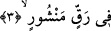
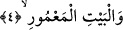

hafaza meleklerinin yazdığı, insanın kıyâmet gününde önüne konacak, bazılarının
sağından bazılarının da solundan verilecek olan amel defteridir ki “Kıyâmet günü
onun için açılmış olarak bulacağı bir kitap çıkarırız” (el-İsra 17/13) âyet-i kerîmesi
buna delildir.
3. Yayılmış ince deri üzerine,
“Rakk”, kağıt gibi üzerine yazı yazılan ince yumuşak deridir. Bununla, üzerine yazı
yazılan sayfa gibi bir nesneye istiâre olunmuştur. Yine “rakk” denmesinin bir sebebi de
derinin inceliğine işâret içindir. Fethu’r-Rahman’da işâret olunduğu üzere bu tip
hayvan derilerini ifâde için genellikle “rakk” kullanılmaktadır.
Kâmus’ta bu kelime “er-rakk” ve esre ile “er-rikk” olarak yine üzerine yazı yazılan
ince deri anlamında kullanmıştır. er-Rakk, rakîk/ince gibi el-ğalîz/sert, katı kelimesinin
zıddıdır ve “beyaz sayfa” anlamına da gelmektedir...
Menşur kelimesi, “mebsût/yayılmış” anlamında olup “mutavvâ/dürülmüş” kelimesinin
zıddıdır.
Râğıb elbiseyi, sayfayı, bulutu, nimeti ve sözü neşretmenin, bunları yayma anlamına
geldiğini söylemiştir. Bir görüşe göre de “menşûr” kelimesi, “mensûr/açılmış ve hiç
kapanmayacak olan” mânâsını taşır.” “Rakk” ve “menşûr” kelimelerinin nekre olarak
getirilmesi, tâzîm için veya her ikisinin de insanların bilmediği şeyler olduğunu
hissettirmek içindir.
Âyetin, “okuma sırasında açılan yazılmış kitaba yemin olsun” mânâsına geldiği
söylenmiştir.
Buradaki “rakk-ı menşûr’dan kasıd, levh-i mahfuzda yazılı olan şeyler takdirinde
kabul edilirse, o zaman bu ifâde mecâzî anlamda kullanılmış olur. Zira levh-i mahfuz
Allah Teala’nının beyaz inci içinde yarattığı bir eseridir ki o defterin kalemi ve yazısı
nurdur. Genişliği yerle gök arası kadardır. Allah Teala bu deftere her gün üç yüz altmış
defa nazar eder. Her bir nazarında O, diriltir, öldürür, aziz kılar, zelil kılar ve dilediğini
yapar.
4. Ma’mur (bakımlı, şen) Ev’e
Yâni Kâbe’ye yemin olsun! “Kâbe’nin imarı”ndan murâd, onun hacılarla, umrecilerle
veya oraya gelip yerleşenlerle ma’mur olmasıdır. Başka bir görüşe göre de “Beyt-i